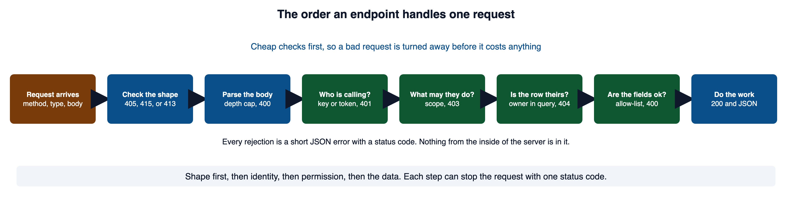
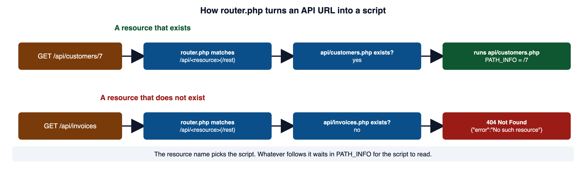
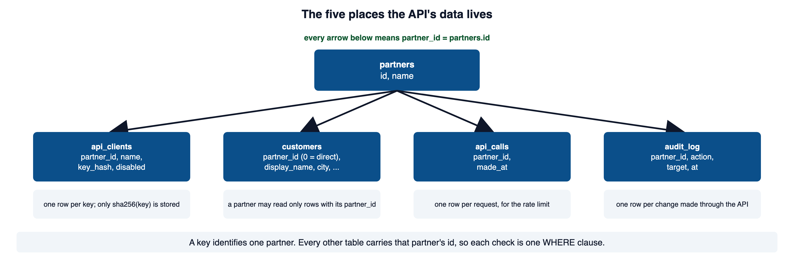
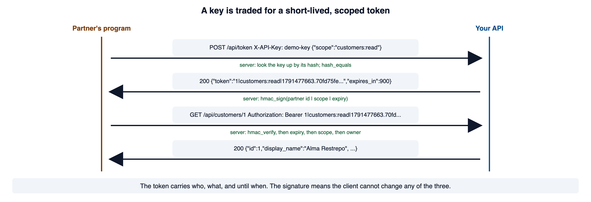
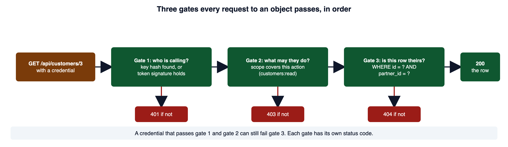
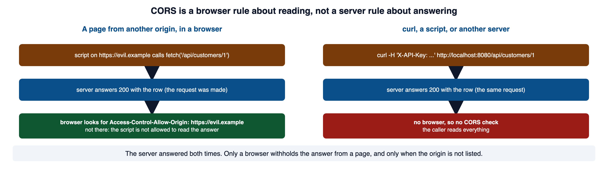
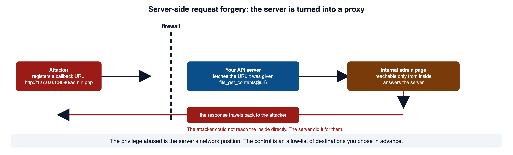

A partner application asks for a customer record using code instead of the portal’s web form. The server must establish the caller, validate the request, enforce ownership, and return only the permitted data. This module turns those decisions into an API design and verification plan.
Read this page with your portal running in Cloud Shell, so you can type each curl command and compare what comes back. Red code blocks show a shape to recognize and never ship. Green code blocks show the pattern to copy.
1Required reading
These three are required reading for the module. This page teaches everything the assignment and the quiz need; the readings give the same material as the sections below in the industry's own words, which is what a scanner finding, a breach report, or a bug ticket will use.
- OWASP Top 10:2025 A01 Broken Access Control. The highest-ranked category on the current list. It maps CWE-639, CWE-284, and CWE-918, which are the weaknesses in sections 9 and 14, and it says to deny by default and to enforce record ownership.
- OWASP REST Security Cheat Sheet. The operative reference for this module. It covers HTTPS, access control, JWTs, API keys, content types, input validation, error handling, CORS, and return codes, in about the order this page does.
- CLARK: Using Secure APIs, Securely. Courseware from the University of Maryland on consuming and exposing an API safely.
2What an API changes
Module 08 gave you the HTTP and REST primer: a resource has a URL, a method says what to do to it, and a status code says how it went. It also gave you the API-key pattern. This page builds the rest of a partner API on those two pieces.
An API exposes the same data and the same actions as the pages of the portal. What is missing is the browser. There is no session cookie the browser attaches on its own, no form to carry a CSRF token, no button you could hide, and no page that encodes output on its way out. Every request arrives holding exactly what its sender chose to put in it.
An endpoint handles every request in the same order, and the order matters. The cheap checks run first, so a bad request is turned away before it costs anything.

The API is usually the second interface a system grew, and the one nobody threat-modeled. The pages were reviewed. The JSON routes reached the same tables and shipped to a deadline. When you count attack surface, count the API routes on their own, including any old version still answering.
The OWASP API Security Top 10 is the API-specific list. Its 2023 edition puts broken object level authorization first, then broken authentication, then broken object property level authorization, then unrestricted resource consumption, and server side request forgery at number seven. Each one has a section on this page.
3Sending a JSON request with curl
The Orientation page Requests and Developer Tools shows the three curl options an API request needs. -X POST sets the method. -H adds a header. -d carries the body. -i prints the response headers along with the body, so you can see the status line.
curl -i -X POST -H 'Content-Type: application/json' -d '{"scope":"customers:read"}' http://localhost:8080/api/tokenOn a portal with nothing under api/ yet, the router answers for every API address:
HTTP/1.1 404 Not Found
Content-Type: application/json
{"error":"No such resource"}Section 4 explains that answer. Once the api/token.php from section 8 exists, the same command with a key header gets a token back. The Host, Date, Connection, and X-Powered-By lines are left out of every response on this page.
curl -i -X POST -H 'Content-Type: application/json' -H 'X-API-Key: demo-key' -d '{"scope":"customers:read"}' http://localhost:8080/api/tokenHTTP/1.1 200 OK
Content-Type: application/json; charset=utf-8
{"token":"1|customers:read|1791477663.70fd75fe8f902757fc883fa744f104b49cd0dce977ffa63a7f9caf1993732075","token_type":"Bearer","expires_in":900}A body that is not valid JSON is sent the same way. What you are testing is how the server answers it.
curl -i -X POST -H 'Content-Type: application/json' -H 'X-API-Key: demo-key' -d '{"scope":' http://localhost:8080/api/tokenHTTP/1.1 400 Bad Request
Content-Type: application/json; charset=utf-8
{"error":"bad_json"}Put the body and any URL that contains ? or & in single quotes, or the shell reads those characters itself.
curl: HTTP scripting is curl's own guide to -i, -X, -H, and -d, and it says -d makes a POST with the form content type. W3Schools: HTTP Request Methods gives one line each for GET, POST, PUT, PATCH, DELETE, and OPTIONS.
4How router.php reaches an endpoint
The portal runs on PHP's built-in server, which has no configuration file. The rules for which request goes where live in one script, router.php, and the server runs it at the start of every request. When the script returns false, the server serves the file that was asked for. Otherwise whatever the script printed is the response.
A partner calls /api/customers, not /api/customers.php. One rule in router.php makes that work.
<?php
// From router.php. The partner API lives under api/, one script per resource.
if (preg_match('#^/api/([a-z][a-z0-9_-]*)(/.*)?$#', $path, $m)) {
$script = __DIR__ . '/api/' . $m[1] . '.php';
if (file_exists($script)) {
$_SERVER['PATH_INFO'] = $m[2] ?? '';
require $script;
return true;
}
http_response_code(404);
header('Content-Type: application/json');
echo json_encode(['error' => 'No such resource']);
return true;
}
A resource with no script gets the JSON 404 you saw in section 3. The pattern only accepts a lowercase name, so a request for /api/../db.php never reaches file_exists.
curl -i -H 'X-API-Key: demo-key' http://localhost:8080/api/invoicesHTTP/1.1 404 Not Found
Content-Type: application/json
{"error":"No such resource"}Inside the endpoint, PATH_INFO is untrusted text like any other part of the request. Match it against the exact shape you expect before you use it.
<?php
// WHY: Serialization represents structured values as data rather than hand-built executable syntax.
$path = $_SERVER['PATH_INFO'] ?? '';
// Everything that names one customer looks like /<digits>, and nothing else.
if (preg_match('#^/(\d+)$#', $path, $m) !== 1) {
http_response_code(404);
echo json_encode(['error' => 'not_found']);
exit;
}
$id = (int) $m[1];Secure. Why: Serialization represents structured values as data rather than hand-built executable syntax.
PHP Manual: Built-in web server documents the router script and what returning false means. PHP Manual: $_SERVER documents PATH_INFO, REQUEST_METHOD, and the HTTP_ naming rule.
5The tables the API uses
The portal's data/seed.sql has five places the API reads and writes. Four are tables added for the partner API, and one is a column on customers.
CREATE TABLE partners (
id INTEGER PRIMARY KEY AUTOINCREMENT,
name TEXT NOT NULL
);
-- One row per API key a partner holds. Only the SHA-256 of the key is stored.
CREATE TABLE api_clients (
id INTEGER PRIMARY KEY AUTOINCREMENT,
partner_id INTEGER NOT NULL,
name TEXT NOT NULL,
key_hash TEXT NOT NULL,
created_at TEXT NOT NULL,
disabled INTEGER NOT NULL DEFAULT 0
);
-- One row per API request, for rate limiting. made_at is a Unix timestamp.
CREATE TABLE api_calls (
id INTEGER PRIMARY KEY AUTOINCREMENT,
partner_id INTEGER NOT NULL,
made_at INTEGER NOT NULL
);
-- One row per change made through the API, so every change is traceable.
CREATE TABLE audit_log (
id INTEGER PRIMARY KEY AUTOINCREMENT,
partner_id INTEGER NOT NULL,
action TEXT NOT NULL,
target TEXT NOT NULL,
at INTEGER NOT NULL
);The customers table gained one column: partner_id INTEGER NOT NULL DEFAULT 0. A partner's customers carry that partner's id. Direct customers carry 0, so no partner can ever match them.

The seed data has two partners, Harbor Logistics (id 1) and Pacific Rim Dental Group (id 2), and one client row for partner 1. The development key is the string demo-key. The table holds its hash, never the key.
<?php
echo hash('sha256', 'demo-key');c48a01f49fd0f2cc404bc3cbbc80e91457a3d41bb429a695243de4c61794155cThat is the exact key_hash in the seeded api_clients row. Customers 1, 2, and 6 belong to partner 1. Customers 3, 4, and 7 belong to partner 2. Customers 5 and 8 are direct. Keep those numbers in mind, because the responses in sections 9 and 10 depend on them.
The portal's data/seed.sql is the source for this section, and the hash output above is what hash('sha256', 'demo-key') returns. PHP Manual: hash confirms the function returns lowercase hexadecimal.
6Reading an untrusted JSON body
The first thing an endpoint does with a POST or PATCH is turn bytes from an unknown sender into a PHP array. That step has to assume the bytes are hostile. Reject what you can before you parse, then parse with limits.
<?php
// WHY: Explicit media-type and body checks keep malformed or unexpected request data out of the endpoint logic.
function read_json_body(): array
{
// A Content-Type may carry "; charset=utf-8", so compare only the media type.
$type = strtolower(trim(explode(';', $_SERVER['CONTENT_TYPE'] ?? '')[0]));
if ($type !== 'application/json') {
respond(415, ['error' => 'unsupported_media_type']);
}
$raw = file_get_contents('php://input');
if ($raw === false) {
respond(500, ['error' => 'body_read_failed']);
}
if (strlen($raw) > 4096) {
respond(413, ['error' => 'body_too_large']);
}
try {
$object = json_decode($raw, false, 8, JSON_THROW_ON_ERROR);
} catch (JsonException $e) {
respond(400, ['error' => 'bad_json']);
}
if (!$object instanceof stdClass) {
respond(400, ['error' => 'bad_json']);
}
return get_object_vars($object);
}Secure. Why: Explicit media-type and body checks keep malformed or unexpected request data out of the endpoint logic.
respond is a four-line helper that sets the status code, prints one JSON object, and exits. Section 11 shows it. php://input is a read-only stream of the raw request body; read it once into a variable and work from that.
Two arguments to json_decode are security controls, not tidiness.
Here is the same body sent without the JSON content type. -d labels it as a form, and the endpoint stops at the first check.
curl -i -X POST -H 'X-API-Key: demo-key' -d '{"scope":"customers:read"}' http://localhost:8080/api/tokenHTTP/1.1 415 Unsupported Media Type
Content-Type: application/json; charset=utf-8
{"error":"unsupported_media_type"}PHP Manual: json_decode documents the depth argument and the null return. PHP Manual: JSON constants says JSON_THROW_ON_ERROR throws JsonException instead of setting the global error state. PHP Manual: php:// wrappers describes php://input as a read-only stream of the raw request body.
7Authenticating a partner with its API key
Module 08 taught the API-key pattern: read the key from a header, look the client up by the key's hash, and compare with hash_equals. Here it is on the portal's tables, with the seeded demo-key.
<?php
// WHY: The string comparison avoids numeric-string coercion in the secret check.
$key = $_SERVER['HTTP_X_API_KEY'] ?? '';
$hash = hash('sha256', $key);
$client = q_one(
'SELECT id, partner_id, key_hash FROM api_clients WHERE key_hash = ? AND disabled = 0',
[$hash]
);
if ($client === null || !hash_equals($client['key_hash'], $hash)) {
respond(401, ['error' => 'unauthorized']);
}
$partnerId = (int) $client['partner_id']; // the caller is this partner, and nothing moreSecure. Why: The string comparison avoids numeric-string coercion in the secret check.
Authentication answers one question: who is calling. Here the answer is a partner id. It says nothing yet about which customers that partner may read, and treating the two as one question is the most common way an API leaks data.
curl -i http://localhost:8080/api/customers/1HTTP/1.1 401 Unauthorized
Content-Type: application/json; charset=utf-8
{"error":"unauthorized"}curl -i -H 'X-API-Key: demo-key' http://localhost:8080/api/customers/1HTTP/1.1 200 OK
Content-Type: application/json; charset=utf-8
{"id":1,"display_name":"Alma Restrepo","city":"Long Beach","account_status":"active"}The disabled = 0 in the query is how a key is revoked. Set the row's disabled to 1 and the key stops working on the next request, with no code change. To rotate a key, insert a new row with the new key's hash, hand the new key to the partner, and disable the old row once they have switched.
The OWASP REST Security Cheat Sheet in section 1 says passwords, security tokens, and API keys should not appear in the URL, and that keys alone should not protect high-value resources. OWASP API2:2023 Broken Authentication lists sending tokens in the URL and skipping the expiry check as the failures, and says API keys authenticate API clients, not users.
8Trading the key for a short-lived, scoped token
A partner's key carries the partner's full authority for as long as the key exists. The memo's third-party dashboard needs less than that: read a rep's queue, for a while, and nothing else. The answer is a second credential that is narrower and shorter-lived than the key.
The exchange is one endpoint, POST /api/token. The caller proves it holds the key, names the scope it wants, and receives a signed token that expires in fifteen minutes.

<?php
// WHY: A type check prevents array-shaped input from reaching operations that expect text.
// api/token.php, after the method, content-type, body, and key checks have passed.
$offered = ['customers:read', 'customers:write'];
$scope = $data['scope'] ?? '';
if (!is_string($scope) || !in_array($scope, $offered, true)) {
respond(400, ['error' => 'unknown_scope']);
}
// Sign partner id, scope, and expiry together so none of them can be changed.
$expires = time() + 900;
$token = hmac_sign($client['partner_id'] . '|' . $scope . '|' . $expires);
respond(200, ['token' => $token, 'token_type' => 'Bearer', 'expires_in' => 900]);Secure. Why: A type check prevents array-shaped input from reaching operations that expect text.
hmac_sign is the portal's helper from lib/hmac.php. Module 10 section 9 taught what it does: it appends a keyed hash, so a value that comes back with a valid tag was issued by this server and has not changed. The signing key is TECHCORP_HMAC_KEY, set in .env the way Module 10 section 7 set TECHCORP_DATA_KEY. The token in section 3 illustrates the output format: 1|customers:read|1791477663 followed by a dot and the tag.
On every later request, the endpoint verifies the tag first and reads the three fields only after that.
<?php
// WHY: Verifying the signature before trusting token fields prevents a caller from substituting their own identity or expiry.
$auth = $_SERVER['HTTP_AUTHORIZATION'] ?? '';
if (str_starts_with($auth, 'Bearer ')) {
$payload = hmac_verify(substr($auth, 7)); // null means altered or forged
if ($payload === null) {
respond(401, ['error' => 'unauthorized']);
}
$fields = explode('|', $payload);
if (count($fields) !== 3) {
respond(401, ['error' => 'unauthorized']);
}
$partnerId = filter_var($fields[0], FILTER_VALIDATE_INT, ['options' => ['min_range' => 1]]);
$scope = $fields[1];
$expires = filter_var($fields[2], FILTER_VALIDATE_INT, ['options' => ['min_range' => 1]]);
if ($partnerId === false || $expires === false || !in_array($scope, ['customers:read', 'customers:write'], true)) {
respond(401, ['error' => 'unauthorized']);
}
if (time() >= $expires) {
respond(401, ['error' => 'token_expired']);
}
$caller = ['partner_id' => (int) $partnerId, 'scope' => $scope];
}Secure. Why: Verifying the signature before trusting token fields prevents a caller from substituting their own identity or expiry.
curl -i -H 'Authorization: Bearer 1|customers:read|1791477663.70fd75fe8f902757fc883fa744f104b49cd0dce977ffa63a7f9caf1993732075' http://localhost:8080/api/customers/1HTTP/1.1 200 OK
Content-Type: application/json; charset=utf-8
{"id":1,"display_name":"Alma Restrepo","city":"Long Beach","account_status":"active"}Reading the token is not the same as trusting it. Nothing in a token is true until the signature has been checked.
<?php
// WHY: Splitting a token without verifying its signature trusts identity, scope, and expiry values supplied by the caller.
// Splits the token and trusts the fields. No signature check.
[$partnerId, $scope, $expires] = explode('|', explode('.', $bearer)[0], 3);
$caller = ['partner_id' => (int) $partnerId, 'scope' => $scope];Vulnerable. Why: Splitting a token without verifying its signature trusts identity, scope, and expiry values supplied by the caller.
The portal's exchange is the small version of OAuth 2.0. OAuth names four roles: the resource owner who grants access, the client that acts for them, the authorization server that issues tokens, and the resource server that holds the data. Here the portal plays both server roles, the partner's key stands in for the owner's consent, and the token is the access token. A full OAuth deployment adds a refresh token, a longer-lived credential used only to obtain new access tokens, which is why it needs stronger protection than the access token it mints.
An access token from an outside authorization server, usually a JSON Web Token, gets the same checks the portal's token gets, plus two more. The full list a resource server owes a token: a valid signature, a trusted issuer (iss), the intended audience (aud) so a token minted for another API is refused here, the expiry and not-before times (exp, nbf), the required scope, and revocation status where the design keeps one.
RFC 6750: Bearer Token Usage defines a bearer token as one any party in possession can use, requires TLS, and says the token belongs in the Authorization header and not in the URL. RFC 6749: The OAuth 2.0 Authorization Framework defines the four roles, access tokens, refresh tokens, and the scope parameter. OWASP JSON Web Token Cheat Sheet lists the none algorithm, key confusion, and the issuer and audience checks.
9Authorization on every endpoint
A valid, correctly scoped credential still does not say which rows the caller may touch. That decision is per object, and it runs on every endpoint. When it is missing, the endpoint returns the right shape of data for the wrong partner, and nothing errors.
Hold three gates in mind. Every request to an object passes all three, in order.

Gate 2 is the scope check. A key carries the partner's full authority, so it gets the write scope. A token carries only the scope it was issued with.
<?php
// WHY: An explicit scope decision prevents a valid credential from authorizing an operation outside its granted permissions.
function require_scope(array $caller, string $needed): void
{
// A write scope includes read. Anything else is exactly what it says.
$granted = $caller['scope'] === 'customers:write'
? ['customers:read', 'customers:write']
: [$caller['scope']];
if (!in_array($needed, $granted, true)) {
respond(403, ['error' => 'insufficient_scope']);
}
}Secure. Why: An explicit scope decision prevents a valid credential from authorizing an operation outside its granted permissions.
Gate 3 is ownership. Here is the gate left out.
<?php
// WHY: A lookup that omits a required owner condition can return a record the caller may not access.
// The route trusts the id and never asks which partner owns the row.
$row = q_one('SELECT id, display_name, city, account_status FROM customers WHERE id = ?', [$id]);Vulnerable. Why: A lookup that omits a required owner condition can return a record the caller may not access.
The query is parameterized, so it is safe from injection, and it is still wrong. It fetches customer 3 for partner 1. The fix puts the ownership rule inside the query, so a row the caller does not own is never selected.
<?php
// WHY: Parameterized helper calls preserve data values; the query must also enforce the required ownership rule.
require_scope($caller, 'customers:read');
$row = q_one(
'SELECT id, display_name, city, account_status FROM customers WHERE id = ? AND partner_id = ?',
[$id, $caller['partner_id']]
);
if ($row === null) {
respond(404, ['error' => 'not_found']); // the same answer as for an id that does not exist
}
respond(200, $row);Secure. Why: Parameterized helper calls preserve data values; the query must also enforce the required ownership rule.
curl -i -H 'X-API-Key: demo-key' http://localhost:8080/api/customers/3HTTP/1.1 404 Not Found
Content-Type: application/json; charset=utf-8
{"error":"not_found"}Customer 3 exists. It belongs to partner 2. Partner 1's key gets the same 404 it would get for customer 999, so the response does not confirm that the row is there.
The same rule applies to a write. An UPDATE with WHERE id = ? AND partner_id = ? changes zero rows for a customer the caller does not own, but rowCount() of zero can also mean an unchanged value on some drivers. Do not infer missing ownership from that result alone; check existence under the same owner constraint.
OWASP Authorization Cheat Sheet says to deny by default, to validate permissions on every request, and that access to one object of a type does not mean access to every object of that type. CWE-639 is the formal entry.
10Validating the fields a caller may set
Authorization decides whether the caller may act. Validation decides whether what they sent is acceptable to act on. The order rejects cheaply first: content type, body size, JSON syntax and depth, unknown fields, then each field's type, length, and set, then the ownership rule on the write.
One check on that list is left out more than any other, and it has a name.
<?php
// WHY: Accepting arbitrary body fields permits changes to protected ownership or configuration columns.
// Every field in the body becomes a column in the UPDATE, including partner_id.
foreach ($data as $column => $value) {
q("UPDATE customers SET $column = ? WHERE id = ?", [$value, $id]);
}Vulnerable. Why: Accepting arbitrary body fields permits changes to protected ownership or configuration columns.
That loop also puts a request value into the SQL text, which Module 04 showed is injection. The defense is Module 03's allow-list, applied to the whole body.
<?php
// WHY: A type check prevents array-shaped input from reaching operations that expect text.
require_scope($caller, 'customers:write');
$data = read_json_body();
// Only the fields a partner may set. Anything else is refused, not ignored.
$allowed = ['city', 'account_status'];
$unknown = array_diff(array_keys($data), $allowed);
if ($unknown !== []) {
respond(400, ['error' => 'unexpected_field', 'fields' => array_values($unknown)]);
}
$city = $data['city'] ?? null;
if ($city !== null && (!is_string($city) || !preg_match('/\A[A-Za-z .\'-]{1,40}\z/', $city))) {
respond(400, ['error' => 'invalid_city']);
}
$status = $data['account_status'] ?? null;
if ($status !== null && !in_array($status, ['active', 'past_due', 'closed'], true)) {
respond(400, ['error' => 'invalid_account_status']);
}
$stmt = q(
'UPDATE customers SET city = COALESCE(?, city), account_status = COALESCE(?, account_status)
WHERE id = ? AND partner_id = ?',
[$city, $status, $id, $caller['partner_id']]
);
if ($stmt->rowCount() === 0) {
$owned = q_one('SELECT id FROM customers WHERE id = ? AND partner_id = ?', [$id, $caller['partner_id']]);
if ($owned === null) {
respond(404, ['error' => 'not_found']);
}
// An owned row may already contain the requested values.
}Secure. Why: A type check prevents array-shaped input from reaching operations that expect text.
curl -i -X PATCH -H 'X-API-Key: demo-key' -H 'Content-Type: application/json' -d '{"city":"Irvine","partner_id":2}' http://localhost:8080/api/customers/1HTTP/1.1 400 Bad Request
Content-Type: application/json; charset=utf-8
{"error":"unexpected_field","fields":["partner_id"]}curl -i -X PATCH -H 'X-API-Key: demo-key' -H 'Content-Type: application/json' -d '{"city":"Irvine"}' http://localhost:8080/api/customers/1HTTP/1.1 200 OK
Content-Type: application/json; charset=utf-8
{"id":1,"display_name":"Alma Restrepo","city":"Irvine","account_status":"active"}Refusing an unknown field, rather than ignoring it, surfaces client bugs and makes the contract explicit. It also keeps a sensitive column from becoming writable the day someone adds it to a loop. The COALESCE keeps a column as it was when the body did not name it.
OWASP Mass Assignment Cheat Sheet recommends an allow-list of fields and says a block-list of sensitive fields is not enough on its own. CWE-915 is the formal entry, with mass assignment as its alternate term.
11Status codes and errors that leak nothing
Every answer from an endpoint is a status code and one small JSON object. The helper below is the only place that writes a response, so every error has the same shape.
<?php
// WHY: Serialization represents structured values as data rather than hand-built executable syntax.
function respond(int $status, array $body): never
{
http_response_code($status);
echo json_encode($body);
exit;
}Secure. Why: Serialization represents structured values as data rather than hand-built executable syntax.
Wrap the whole endpoint in one handler, so an unexpected failure gets the same treatment as an expected one.
<?php
// WHY: Cryptographic random bytes avoid predictable values for security-sensitive identifiers.
try {
// ... the endpoint ...
} catch (Throwable $e) {
$id = bin2hex(random_bytes(4));
error_log('[' . $id . '] ' . $e->getMessage()); // the detail goes to the log
respond(500, ['error' => 'server_error', 'correlation_id' => $id]);
}Secure. Why: Cryptographic random bytes avoid predictable values for security-sensitive identifiers.
Here is the handler catching a real failure. hmac_key() throws when TECHCORP_HMAC_KEY is not set. The caller sees eight hex characters; the server log holds the message.
HTTP/1.1 500 Internal Server Error
Content-Type: application/json; charset=utf-8
{"error":"server_error","correlation_id":"af0829e4"}[Thu Oct 8 09:26:01 2026] [af0829e4] TECHCORP_HMAC_KEY is missing or too shortThe status codes an API leans on, each with the line MDN gives it.
| Status | Meaning | When this page sends it |
|---|---|---|
| 200 | the request succeeded | a row, a list, a token |
| 400 | the server will not process a client error such as malformed syntax | bad JSON, an unknown field, a bad value |
| 401 | the HTTP name is "unauthorized"; the meaning is "unauthenticated" | no key, a wrong key, a forged or expired token |
| 403 | the client does not have access rights to the content | a valid token without the needed scope |
| 404 | the server cannot find the requested resource | a row that does not exist, or one the caller does not own |
| 405 | the method is known but not supported by the target | a DELETE, with an Allow header naming what is |
| 413 | the request body is larger than the server's limit | a body over 4,096 bytes |
| 415 | the media format is not supported | a body without Content-Type: application/json |
| 429 | too many requests in a given amount of time | the rate limit in section 13, with Retry-After |
| 500 | the server met a situation it does not know how to handle | the handler above |
The distinction that matters most is 401 against 403. A 401 tells the client to authenticate. A 403 tells a client that has already authenticated that trying again with the same credential will not help. A status code is a convention for communicating, not a control that enforces anything.
MDN: HTTP response status codes is the source for the table. PHP Manual: http_response_code documents the function the helper calls, and PHP Manual: header says a header must be sent before any output, which is why the helper prints last.
12CORS: what it protects and what it does not
CORS is the control most often mistaken for authorization, so be exact about what it is.
A browser sends an Origin header with a cross-origin request. If the response carries Access-Control-Allow-Origin naming that origin, the page's script may read the body. If not, the browser hands the script an error, and the request was still made and still answered.

The endpoint names the one browser origin that may read it, and echoes it back only when it matches.
<?php
// WHY: The rejection branch must stop or exclude further processing so denied input cannot reach the protected operation.
$allowedOrigins = ['https://partner-dashboard.example'];
$origin = $_SERVER['HTTP_ORIGIN'] ?? '';
if (in_array($origin, $allowedOrigins, true)) {
header('Access-Control-Allow-Origin: ' . $origin);
header('Vary: Origin');
}
if ($_SERVER['REQUEST_METHOD'] === 'OPTIONS') {
header('Access-Control-Allow-Methods: GET, PATCH');
header('Access-Control-Allow-Headers: Authorization, X-API-Key, Content-Type');
http_response_code(204);
exit;
}Secure. Why: The rejection branch must stop or exclude further processing so denied input cannot reach the protected operation.
curl -i -H 'X-API-Key: demo-key' -H 'Origin: https://partner-dashboard.example' http://localhost:8080/api/customers/1HTTP/1.1 200 OK
Content-Type: application/json; charset=utf-8
Access-Control-Allow-Origin: https://partner-dashboard.example
Vary: Origin
{"id":1,"display_name":"Alma Restrepo","city":"Irvine","account_status":"active"}curl -i -H 'X-API-Key: demo-key' -H 'Origin: https://evil.example' http://localhost:8080/api/customers/1HTTP/1.1 200 OK
Content-Type: application/json; charset=utf-8
{"id":1,"display_name":"Alma Restrepo","city":"Irvine","account_status":"active"}Both requests got the row. The second response has no CORS header, so a browser page at evil.example could not read it. curl read it anyway, because curl never looks at a CORS header. Authentication and authorization on the server are the whole defense; CORS decides only which browser pages may use the API.
MDN: Cross-Origin Resource Sharing explains the Origin header, the preflight, and the rule that * cannot be combined with credentials. MDN: Access-Control-Allow-Origin documents the single-origin value and the Vary: Origin note.
13Rate limits and pagination caps
Availability is a security objective. An API is where one caller can drain a server with the least effort, because the caller is a program that sends requests as fast as the network allows.
The portal's api_calls table is the counter. Each request adds one row; the check counts the caller's rows in the last minute.
<?php
// WHY: The explicitly selected response policy must be applied before headers are committed.
$recent = q_one(
'SELECT COUNT(*) AS c FROM api_calls WHERE partner_id = ? AND made_at > ?',
[$caller['partner_id'], time() - 60]
);
if ((int) $recent['c'] >= 100) {
header('Retry-After: 60');
respond(429, ['error' => 'rate_limited']);
}
q('INSERT INTO api_calls (partner_id, made_at) VALUES (?, ?)', [$caller['partner_id'], time()]);Secure. Why: The explicitly selected response policy must be applied before headers are committed.
After one hundred requests inside a minute, the next one is refused.
HTTP/1.1 429 Too Many Requests
Content-Type: application/json; charset=utf-8
Retry-After: 60
{"error":"rate_limited"}A list endpoint needs a second ceiling. Without one, a request for everything returns everything, and the cost grows with the table.
<?php
// WHY: Bounding the requested result size prevents a caller from turning pagination into an unbounded data request.
// Clamp what the caller asks for, then bind it.
$limit = max(1, min((int) ($_GET['limit'] ?? 50), 50));
$offset = max(0, (int) ($_GET['offset'] ?? 0));
$rows = q_all(
'SELECT id, display_name, city, account_status FROM customers
WHERE partner_id = ? ORDER BY id LIMIT ? OFFSET ?',
[$caller['partner_id'], $limit, $offset]
);
respond(200, ['customers' => $rows, 'limit' => $limit, 'offset' => $offset]);Secure. Why: Bounding the requested result size prevents a caller from turning pagination into an unbounded data request.
curl -i -H 'X-API-Key: demo-key' 'http://localhost:8080/api/customers?limit=500'HTTP/1.1 200 OK
Content-Type: application/json; charset=utf-8
{"customers":[{"id":1,"display_name":"Alma Restrepo","city":"Irvine","account_status":"active"},{"id":2,"display_name":"Dermot O'Brien","city":"Costa Mesa","account_status":"active"},{"id":6,"display_name":"Desmond Achebe","city":"Fountain Vly","account_status":"closed"}],"limit":50,"offset":0}The caller asked for 500 and the response says 50. The ownership rule is in the same query, so the list holds partner 1's three customers and no one else's.
The other ceilings work together with these two: a body-size limit before parsing, a timeout on every outbound call, and bounded error detail, since a long error is itself a resource a caller can spend.
MDN: Retry-After documents the header and its use with 429. SQLite: SELECT says the LIMIT clause places an upper bound on the number of rows returned. CWE-770 is the formal entry.
14Server-side request forgery
Every section so far concerned a request arriving. This one concerns a request your API sends because a caller told it to. The memo's callback URL, which a partner registers so the API can notify it, is the feature that takes one.

The privilege abused is not the caller's. It is your server's network position. Your application sits behind the firewall that protects internal services, and a URL field turns it into a proxy through that firewall.
<?php
// WHY: A requester-controlled destination can make the server contact services outside the permitted callback scope.
// The caller chooses the destination and the server fetches it blindly.
$url = $data['callback_url'];
$body = file_get_contents($url);Vulnerable. Why: A requester-controlled destination can make the server contact services outside the permitted callback scope.
A caller who registers http://127.0.0.1:8080/admin.php reaches the portal's admin page, which was considered safe because it only listens on the local machine. On a cloud instance, http://169.254.169.254/ is the metadata server, which answers any process on the instance with instance details, and your server is such a process. The defense is Module 03's allow-list, applied to the destination instead of to a value.
<?php
// WHY: Checking the URL against a deliberate destination policy limits where the server may send callbacks.
function destination_allowed(string $url): bool
{
$parts = parse_url($url);
if ($parts === false || ($parts['scheme'] ?? '') !== 'https') {
return false;
}
// The host must be one you chose in advance, compared in full.
$allowedHosts = ['hooks.harborlogistics.example'];
return in_array(strtolower($parts['host'] ?? ''), $allowedHosts, true);
}
foreach ([
'https://hooks.harborlogistics.example/billing',
'http://127.0.0.1:8080/admin.php',
'http://169.254.169.254/computeMetadata/v1/',
'https://hooks.harborlogistics.example.attacker.test/',
] as $url) {
echo str_pad($url, 56), destination_allowed($url) ? 'allowed' : 'rejected', "\n";
}Secure. Why: Checking the URL against a deliberate destination policy limits where the server may send callbacks.
https://hooks.harborlogistics.example/billing allowed
http://127.0.0.1:8080/admin.php rejected
http://169.254.169.254/computeMetadata/v1/ rejected
https://hooks.harborlogistics.example.attacker.test/ rejectedWhen the fetch itself runs, give it a timeout and tell it not to follow redirects, because a redirect is a second destination nobody checked.
<?php
// WHY: Disabling redirects and bounding network operations keeps a permitted initial URL from silently following an unreviewed destination.
$curl = curl_init($url);
curl_setopt_array($curl, [
CURLOPT_FOLLOWLOCATION => false, // a redirect is a second, unchecked destination
CURLOPT_TIMEOUT => 5,
CURLOPT_RETURNTRANSFER => true,
]);Secure. Why: Disabling redirects and bounding network operations keeps a permitted initial URL from silently following an unreviewed destination.
Where a fetch must reach hosts you cannot list in advance, resolve the hostname first, refuse private and link-local addresses, connect to the address you checked, and still set the timeout and the no-redirect option. There is a gap between resolving and connecting, and an attacker who controls the DNS answer can change it inside that gap, which is called DNS rebinding. Production systems close that gap with outbound firewall rules, which is a control you request from your infrastructure.
OWASP Server-Side Request Forgery Prevention Cheat Sheet separates the case where the destinations are known from the harder case where they are not, and says deny-lists are bypass-prone. Google Cloud: VM metadata overview gives 169.254.169.254 as the metadata server address and says any process that can query it can read all its values. CWE-918 is the formal entry.
15How you know the controls work
A control you cannot demonstrate is a claim. Run these requests against an endpoint and confirm each result before you call the endpoint done. Every row is a curl command you type and a response you paste.
| Request | Expected |
|---|---|
| No key, no token | 401 |
| Wrong key, or a disabled key | 401 |
| Altered token (signature fails) | 401 |
| Expired token | 401 |
| Valid token, scope too narrow for the action | 403 |
| Owner requesting their own row | 200 |
| Another partner's row, same credential | 404, and the same timing |
| Nested route where the child does not belong to the parent | 404 |
| Malformed JSON, or JSON nested past the cap | 400, no stack trace |
Wrong Content-Type | 415 |
| Body over the size limit | 413 |
Unknown field such as partner_id | 400 |
limit=500 on a list | at most 50 rows back |
| The 101st request in a minute | 429 with Retry-After |
Allowed Origin | Access-Control-Allow-Origin echoed |
Other Origin | no CORS header, body still served |
Callback URL at 127.0.0.1, a private range, or a link-local address | rejected before any fetch |
| Permitted host that redirects elsewhere | not followed |
| Logs and URLs searched for keys and tokens | no hits |
The proof for object-level authorization is three-part and worth stating on its own: the owner succeeds, an anonymous request fails, and a request for another owner's object fails. All three have to hold, because any one of them alone can pass on a broken endpoint.
16Common misconceptions
✕"The endpoint is undocumented, so it is protected."
An undocumented endpoint is usually an unreviewed one. A client that guesses the path reaches it exactly as any other.
✕"The token decoded, so it is valid."
Decoding is reading. Verify the signature, then the expiry, the scope, and for an outside token the issuer and audience, before you trust one field.
✕"CORS protects the API."
CORS is a browser rule about reading responses. A script or a server calls the route regardless, as
curlshows in one command.✕"The token has
customers:readscope, so this read is allowed."Scope grants a class of action. The ownership rule in the query decides which rows this caller may read.
✕"JSON is safe because it is data."
Type, size, depth, unknown fields, and each value still need checking, and the values flow into the same sinks as any other input.
✕"An API does not need CSRF defenses."
True when the credential is a header a foreign page cannot set. False the moment a cookie carries the credential anywhere in the flow.
✕"The URL is a valid URL, so the fetch is safe."
A well-formed URL says nothing about where it points. The question is whether the destination is one you chose in advance.
✕"The key is hashed, so a database leak is harmless."
The hash protects the key. It does not protect the customers the key can reach, or the next key a partner emails to the wrong address. Rotation and revocation still matter.
17Check your understanding
Work these before you look at the answers.
- What does API authentication establish, and what does it not establish?
- For
/api/customers/7, which script doesrouter.phprun, and what is in$_SERVER['PATH_INFO']? - Why can a valid, correctly scoped token still get a 403, and why can one still get a 404?
- Where do API keys end up by accident, and why does putting one in a URL leak it?
- What does a scope represent, and why is it not the same as ownership of a row?
- List the checks an endpoint owes a bearer token before it trusts any field in it.
- Why should access tokens be short-lived, and why does a refresh token need stronger protection?
- What does CORS fail to stop, and what single command demonstrates it?
- Name what an API body needs validated beyond checking that the JSON parses.
- What resource does a caller abuse when rate limits are missing, and how can a rate limit keyed to one account become an attack?
- An endpoint fetches a URL the caller supplies. Whose privilege does a successful attack gain, and why does an allow-list of destinations beat a block-list?
Answers: (1) who is calling, as a partner id, and nothing about which rows that caller may touch. (2) api/customers.php, with PATH_INFO set to /7. (3) a 403 when the scope does not cover the action; a 404 when the ownership rule in the query matches no row, which is the same answer as for a row that does not exist. (4) in URLs, source control, logs, browser history, Referer headers, and screenshots; a key in a URL is copied into the access log and the Referer sent onward, so it reaches places you do not control. (5) a named class of action, such as customers:read; it says the token may read customers, not which customers belong to this caller. (6) the signature with hmac_verify, then the expiry, then the scope; for an outside token also the issuer, the audience, and revocation where the design keeps one. (7) a short-lived token stops being useful soon after it leaks, while a refresh token mints new access tokens and so holds the longer-lived value. (8) it does not stop the request being made or read by a non-browser client, which curl shows at once. (9) content type, body size, nesting depth, unknown fields, then each field's type, length, and set, and the ownership rule on the write. (10) server work, memory, and time that other callers need; a limit keyed only to a victim's account lets an attacker spend that account's quota and lock the victim out. (11) the server's network position rather than any user's authority, so the control is a list of destinations chosen in advance instead of an attempt to list every spelling of an address you meant to exclude.
18References and further study
The three required readings in section 1 and the manual pages linked through the lecture are the main references. Each entry below names what it confirms.
- CWE-284: Improper Access Controlcwe.mitre.org
The parent weakness behind section 9, "does not restrict or incorrectly restricts access to a resource from an unauthorized actor."
- RFC 9700: Best Current Practice for OAuth 2.0 Securityrfc-editor.org
Says access tokens should be audience-restricted to one resource server and refresh tokens for public clients must be sender-constrained or rotated, which confirms the two "plus" checks and the refresh-token note in section 8.
- MDN: HTTP authenticationdeveloper.mozilla.org
The 401 and
WWW-Authenticateexchange, and theBearerscheme entry pointing at RFC 6750, behind sections 8 and 11. - W3Schools: PHP JSONw3schools.com
A live editor for
json_encodeandjson_decode, including the second argument that returns an array, behind section 6. - OWASP Input Validation Cheat Sheetcheatsheetseries.owasp.org
The allow-list rule section 10 applies to a whole body, in Module 03's own source.
Videos.